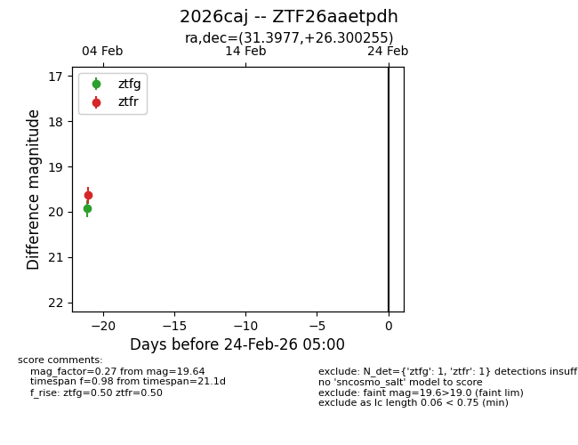
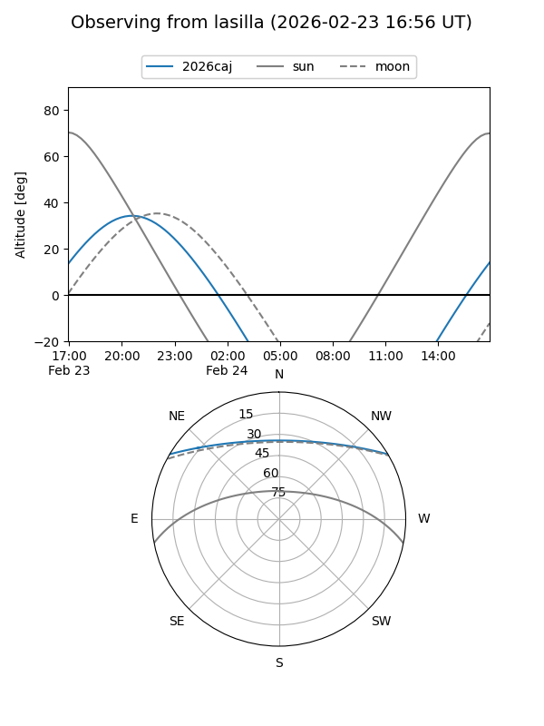
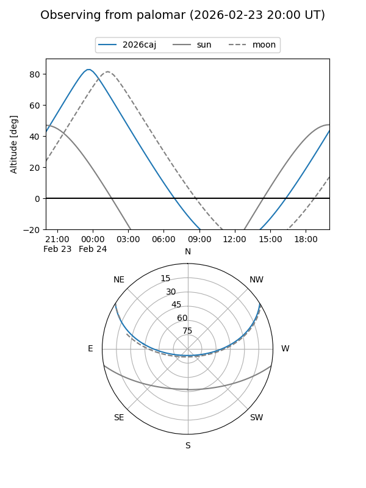

2026caj
Target 2026caj at 2026-02-24 09:08
Aliases and brokers:
FINK: link
Lasair: link
ALeRCE: link
TNS: link
YSE: link
alt names
ZTF26aaetpdh (ztf,fink_ztf)
2026caj (tns,yse)
Coordinates:
equatorial (ra, dec) = 31.3977,+26.30025
equatorial (HMS+DMS) = 02:05:35.44,+26:18:00.92
galactic (l, b) = (142.9601,-33.67118)
Flags:
Photometry:
last ztfg=19.93, ztfr=19.64
1 ztfg, 1 ztfr detections
Lightcurve

Visibility


Additional plots